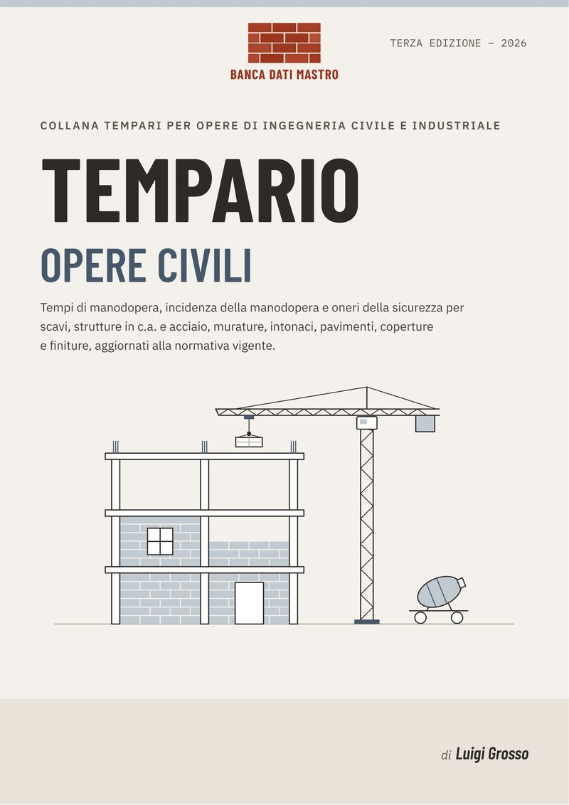
Tempario
Tempario Opere civili
Scavi, strutture in c.a. e acciaio, murature, intonaci, pavimenti e finiture.
Ebook € 18
Acquista
Collana tempari per opere di ingegneria civile e industriale · Edizione 2026
Tre tempari e due manuali di regola d'arte per chi progetta, dirige e verifica le opere pubbliche. Tempi di posa, incidenza della manodopera e oneri della sicurezza, voce per voce.
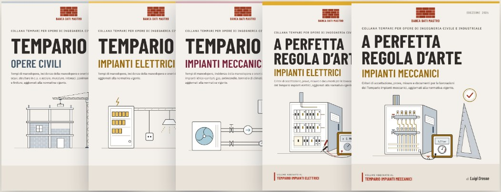
Ogni tempario indica, per ciascuna lavorazione, il tempo di manodopera, l'incidenza della manodopera e gli oneri della sicurezza, aggiornati alla normativa vigente. I manuali di regola d'arte sono abbinati ai tempari e dicono come si accetta e si collauda ciò che è stato posato. Tutti i volumi sono in vendita nelle librerie online.

Tempario
Scavi, strutture in c.a. e acciaio, murature, intonaci, pavimenti e finiture.
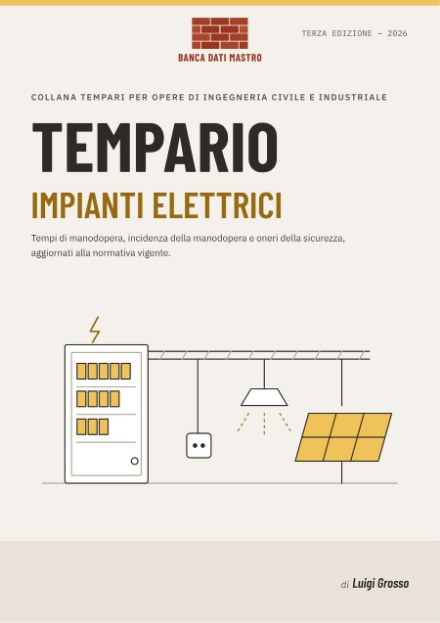
Tempario · Vol. 1 · Terza edizione
Tempi di posa, manodopera e sicurezza dalla distribuzione ai quadri, dall'illuminazione al fotovoltaico.
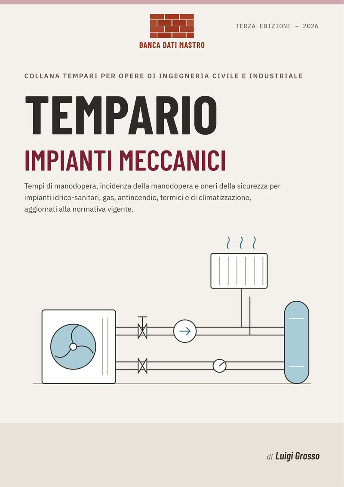
Tempario
Impianti idrico-sanitari, gas, antincendio, termici e di climatizzazione.
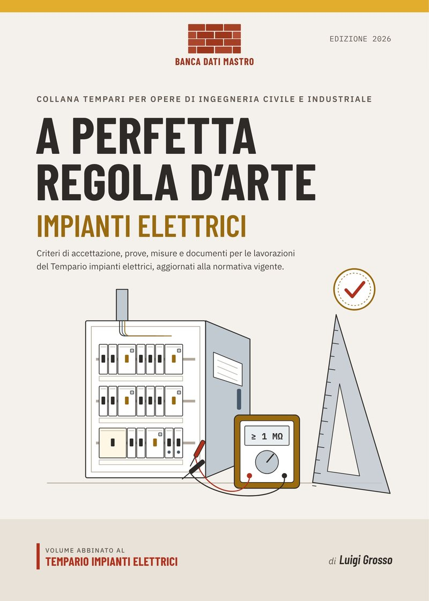
Manuale abbinato al tempario
Criteri di accettazione, prove, misure e documenti per le lavorazioni del Tempario impianti elettrici.
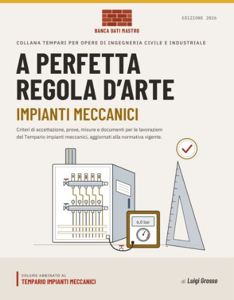
Manuale abbinato al tempario
Criteri di accettazione, prove, misure e documenti per le lavorazioni del Tempario impianti meccanici.
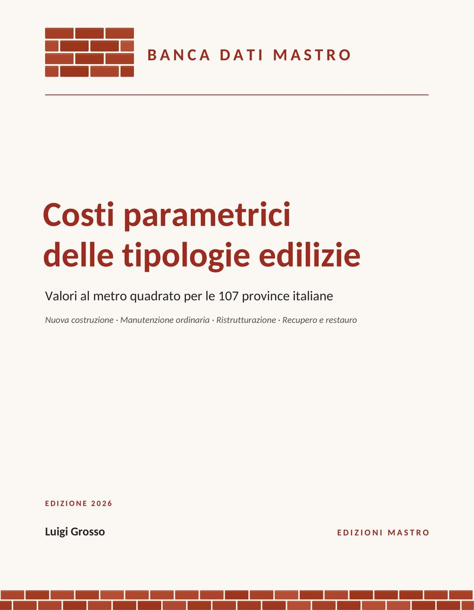
Banca dati · Edizione 2026
Quanto costa costruire al metro quadro: nuova costruzione, manutenzione ordinaria, ristrutturazione, recupero e restauro.
Ogni lavorazione ha un codice, un'unità di misura e tre grandezze. Insieme permettono di stimare la squadra, controllare un'analisi prezzi o verificare la congruità della manodopera.
| Codice | Descrizione della lavorazione | U.M. | Tempo di posa | Incidenza manodopera | Oneri sicurezza |
|---|---|---|---|---|---|
| TE.xx.xxx | Fornitura e posa in opera di cavo multipolare in tubazione predisposta, comprese le terminazioni | m | h/m | % sul prezzo | % sul prezzo |
| TE.xx.xxx | Quadro di distribuzione da parete, assemblaggio e cablaggio delle apparecchiature modulari | cad | h/cad | % sul prezzo | % sul prezzo |
Schema illustrativo della struttura delle voci. I valori sono nel volume.
Le ore di lavoro necessarie per eseguire un'unità di lavorazione a regola d'arte.
La quota del prezzo che va al lavoro, quella su cui si misura la congruità.
La quota legata alle misure di sicurezza proprie della lavorazione.
Strumenti pensati per chi deve dare un numero e poi rispondere di quel numero.
Analisi prezzi, computi e cronoprogrammi costruiti su tempi verificabili.
Controllo delle lavorazioni, accettazione dei materiali, contabilità.
Congruità della manodopera e verifica dei progetti nelle opere pubbliche.
Offerte, organizzazione delle squadre e stima dei tempi di cantiere.
Dal 1994 i dati di mercato per l'edilizia italiana: la storia di Mastro Editore, della Banca dati Mastro e del suo fondatore, Luigi Grosso.
1975 – anni ’80
Luigi Grosso, classe 1956, si diploma geometra nel 1975 e si iscrive a Geologia all'Università Federico II di Napoli, ma sceglie presto il lavoro in un'impresa di costruzioni. Appassionato di elettronica, si forma sull'informatica prima su un Commodore CBM 3032 e poi, nei primi anni '80, su un NCR 8086 IBM compatibile.
Assunto da una grande impresa di rilievo nazionale, affianca al cantiere lo studio della contabilità industriale, fino a organizzare e dirigere il centro di contabilità industriale dell'azienda.
anni ’80 – ’90
La richiesta di quegli strumenti cresce anche fuori dall'impresa. Luigi Grosso lascia il lavoro dipendente e fonda la CEDE, Centro Elaborazione Dati per l'Edilizia, che in pochi anni apre una sede a Bologna e amplia quella di Napoli fino a circa 15 dipendenti e 6 consulenti. La CEDE diventa ben presto MASTRO S.r.l., punto di riferimento per molte imprese di primaria importanza nazionale.
A Bologna arriva l'incarico di pianificare una commessa estera, per conto di un gruppo italiano, con contratto e capitolato NATO: un banco di prova decisivo per il controllo di gestione e le tecniche di project management. Negli anni '90 MASTRO lavora con committenti come Metropolitana Milanese, Politecnico di Milano, Comune di Napoli, Regione Basilicata, Regione Campania e Regione Calabria.
17.02.1992
Il 17 febbraio 1992 inizia l'inchiesta Mani Pulite. Il mercato si ferma, le commesse si bloccano e nel giro di un anno MASTRO chiude la sede di Bologna e ridimensiona quella di Napoli. Ma i server sono pieni di dati, materiali e informazioni di mercato. Con i pochi collaboratori rimasti nasce un progetto nuovo, pensato per le esigenze di trasparenza del dopo Tangentopoli: la Banca dati Mastro.
1994
Un database relazionale di prezzi di mercato e analisi di opere specialistiche per l'edilizia. Debutta al SAIE di Bologna, affiancato da un archivio informatico realizzato con STR S.r.l. di Pegognaga (MN), oggi TeamSystem, allora leader nel software per cantieri e appalti.
Il primo volume: 210 × 290 mm · dorso 130 mm · 4 kg, con dati e analisi per 1.400 categorie di opere specialistiche.
Il primo cliente è l'Acquedotto Pugliese; seguono numerose imprese ed enti. La banca dati cresce fino a 36.000 voci composte da circa 400.000 elementi, tra materiali e specifiche civili, industriali e impiantistiche. MASTRO sviluppa intanto tecnologie avanzate di gestione dei dati e una sezione dedicata alla fotogrammetria terrestre.
1998
Grazie a un accordo con Il Sole 24 Ore nasce la collana Analisi & Prezzi in edilizia, insieme ai Tempari, alle collane Capitolati e Codici e a molte altre pubblicazioni. Luigi Grosso firma inoltre numerosi articoli per Edilizia & Territorio e per Il Sole 24 Ore.
anni ’90 – oggi
Accanto al lavoro, Luigi Grosso riprende gli studi da studente lavoratore. Negli anni '90 si laurea con il massimo dei voti in Pianificazione territoriale, urbanistica e ambientale, con uno studio sul monitoraggio delle frane elaborato con il CNR di Rende (CS); consegue poi anche la laurea in Ingegneria civile. Completa la formazione manageriale con il corso GEPROPI all'Università Bocconi di Milano, l'XI edizione dell'Executive MBA dell'Università di Bologna – Alma Mater Studiorum e il Master in Project Management dell'Università Suor Orsola Benincasa di Napoli.
Oggi è direttore delle Edizioni Mastro e coordina il gruppo tecnico di sviluppo della Banca dati Mastro. È inoltre docente a contratto di Project Management per le opere civili all'Università Federico II di Napoli, cultore della materia in Comunicazione all'Università Suor Orsola Benincasa e tiene corsi su gestione delle opere di ingegneria, sicurezza e controllo di gestione presso università, pubbliche amministrazioni e istituti.
oggi
MASTRO torna a pubblicare in proprio per l'edilizia e il management, in una veste moderna e aggiornata, insieme ai centri di ricerca, alle università e agli enti pubblici con cui ha sempre collaborato.
Luigi Grosso, ingegnere civile e urbanista ambientale.
Project management, storia del costruire, territorio e saggistica, dello stesso autore e della stessa casa editrice.
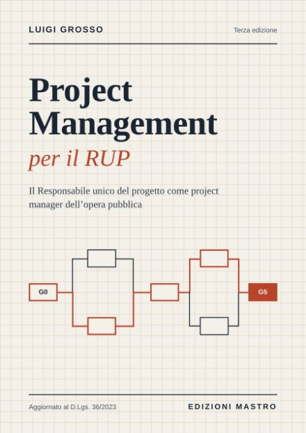
Terza edizione · D.Lgs. 36/2023
Il RUP come project manager dell'opera pubblica. 18 capitoli, check-list, due casi di studio e modelli pronti all'uso.
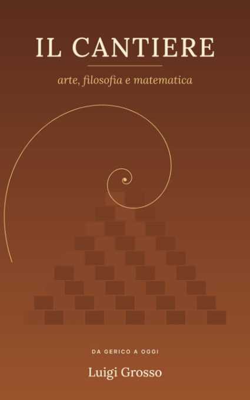
Da Gerico a oggi
Arte, filosofia e matematica: la storia del costruire dalle mura di Gerico alla Torre Eiffel.
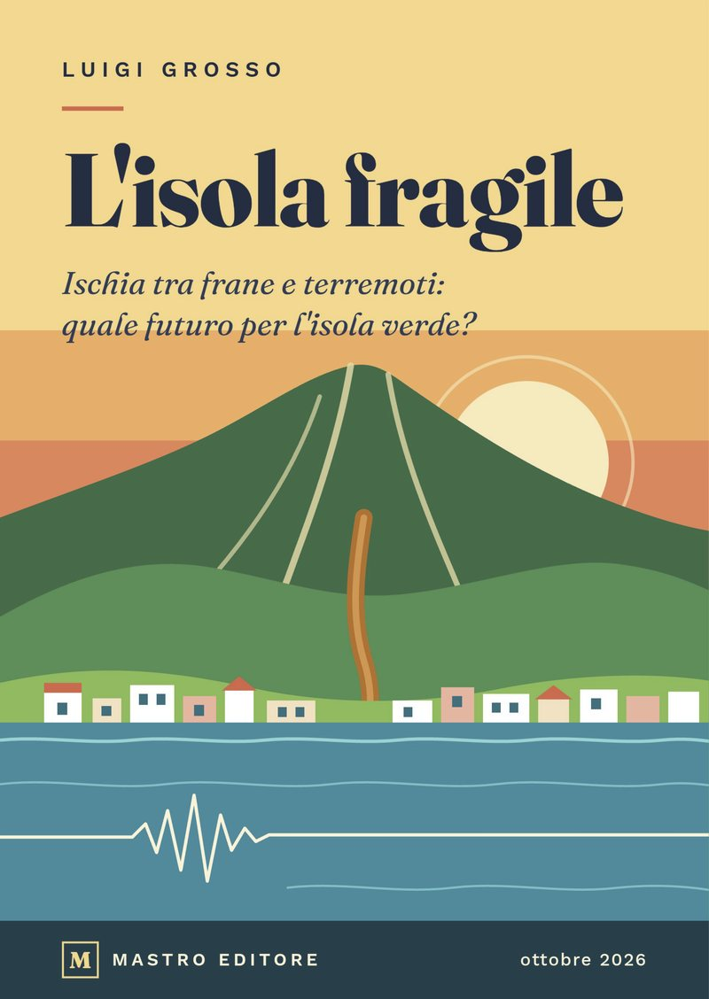
Ischia · 2017–2022
Ischia tra frane e terremoti: quale futuro per l'isola verde? 262 pagine, 19 capitoli.
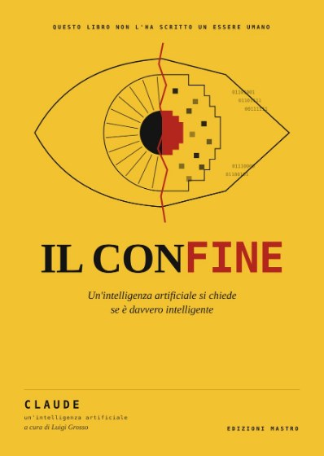
Saggistica
Un'intelligenza artificiale si chiede se è davvero intelligente. Un saggio scritto da Claude, a cura di Luigi Grosso.
I volumi di Banca dati Mastro e di Edizioni Mastro sono in vendita online, in ebook e in cartaceo, sulle principali librerie italiane e internazionali. Cerca il titolo o “Luigi Grosso” nella libreria che preferisci.
Distribuzione StreetLib. La disponibilità di ciascun titolo e formato può variare da una libreria all'altra.
I libri sono in vendita online su la Feltrinelli, IBS, Amazon e nelle principali librerie, in ebook e cartaceo. Per preventivi su più copie o informazioni sui contenuti, scrivi a Mastro Editore o a Banca dati Mastro sui suoi canali.